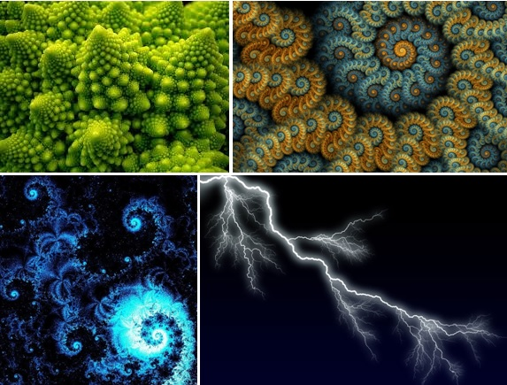
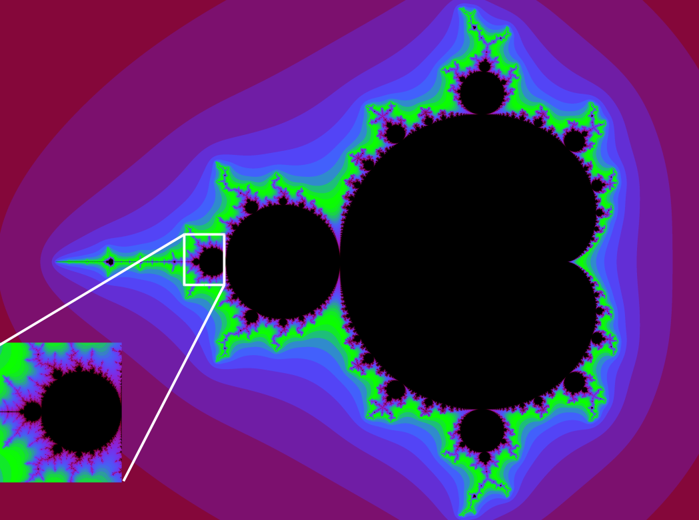

Qué es un fractal?
Un fractal es una figura geométrica o un conjunto matemático que exhibe autosimilitud a diferentes escalas. Esto significa que la estructura de un fractal se repite a diferentes niveles de magnificación. Los fractales son objetos complejos y detallados que pueden ser creados mediante algoritmos matemáticos, y son conocidos por su apariencia intrincada y patrones repetitivos.

Conjunto de Mandelbrot
Un ejemplo clásico de fractal es el conjunto de Mandelbrot, que es una representación gráfica de números complejos que muestra propiedades fractales. Los fractales también tienen aplicaciones en diversas áreas, como la modelación de fenómenos naturales, la compresión de imágenes, y la generación de paisajes y gráficos computacionales.
Características de un fractal
La característica distintiva de un fractal es su autosimilitud, lo que significa que partes más pequeñas del objeto son similares a la totalidad del objeto. Incluso al acercarse o alejarse, se observan patrones similares. Los fractales pueden encontrarse en la naturaleza, como en las ramificaciones de los árboles, los contornos de las montañas, y en procesos caóticos como el clima.
